Now that the base is set up, Erik can start more organized exploration and raids. To manage having a large number of followers—when he gets them—he needs to set up stations for people to suit up and suit down.
Organizing gear
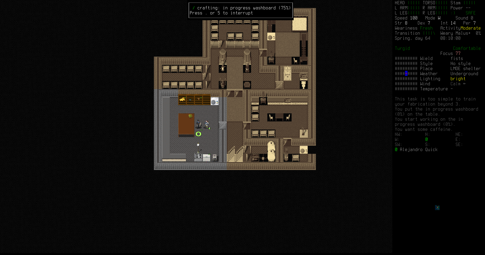First, Erik crafts a washing kit and washes up some holsters and sheaths he took off zombie corpses while raiding light industry compounds.
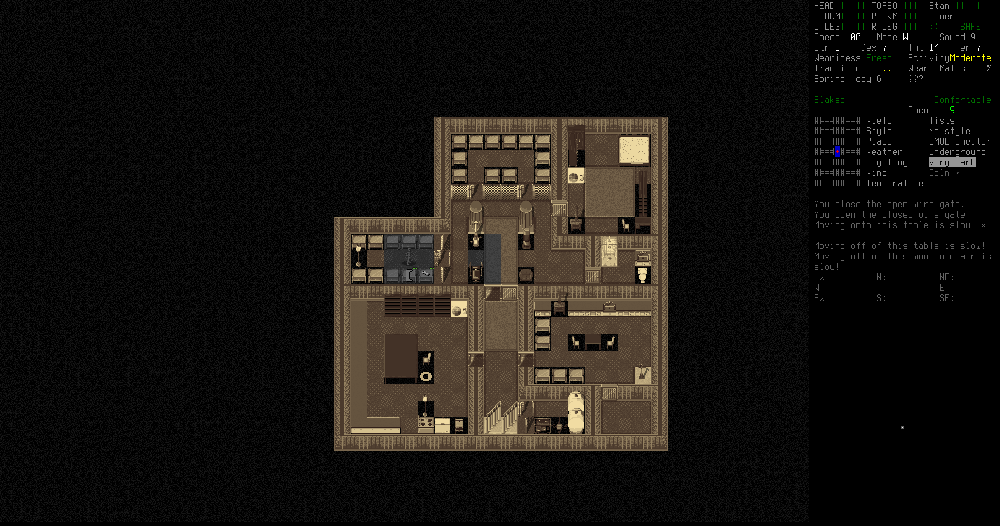Full outfits go into the clothes room. Currently there isn't much difference, but in the future there may be full hazmat outfits, melee raiding outfits, summer outfits, etc.
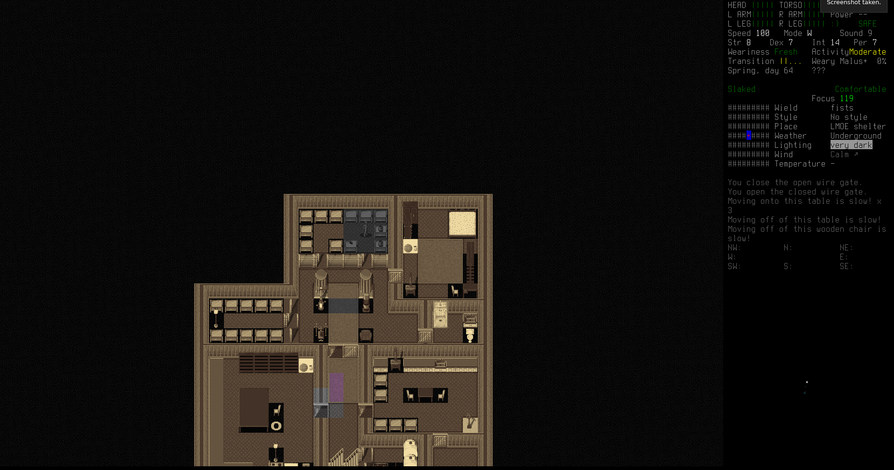Weapons—including slings, holsters, sheaths, and the like—go into the weapons side of this room. Weapons racks should include a gun and a backup melee weapon. In the future there'll be sidearms and rifles in every rack.
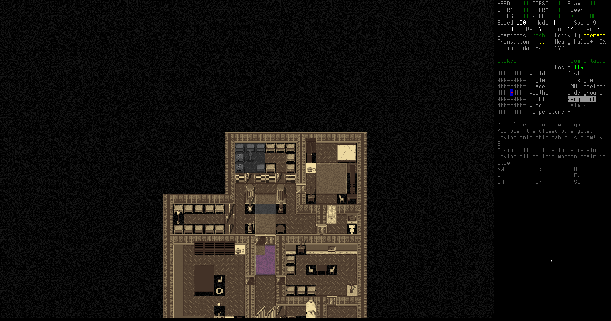Finally, the racks in this half of the room hold backpacks filled with supplies. The backpacks all contain vital tools, like flashlights, multitools, lighters, and prying tools. Eventually the tools will become standardized, but for now there is a little variance between the tools, though they all provide mostly the same capabilities.
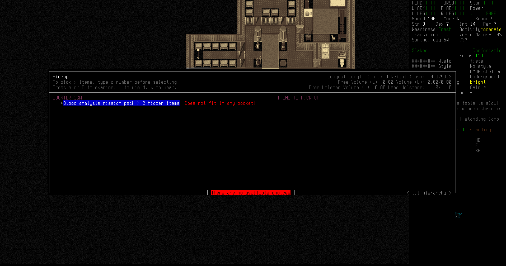Finally, the counters in the workshop are for mission packs, sets of items needed for various missions. Anyone can grab one of these and go.
Exploration
Erik takes the pickup truck out for an exploration spin to scout more of the area and collect useful loot. 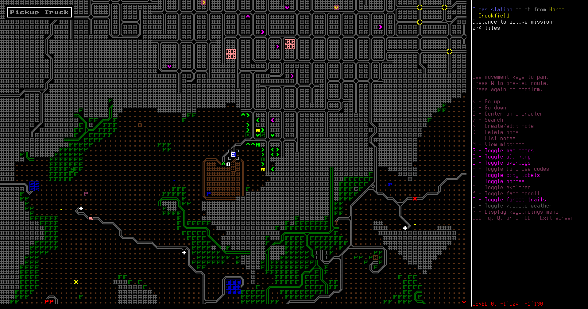
Up near the huge city, Erik finds a ranch with a gas station nearby. The city filled with zombies is uncomfortably close, but he makes sure to stay out of dead earshot.

There's a steam-powered tractor in the barn. Not really useful, but perhaps a time will come when coal is more plentiful than gas?

Not yet, however. Erik fills up his pickup truck with gasoline from the pump. It's still working.

The van he and Alejandro found back when the first left the evac shelter still has gas in it. Erik takes the gas.

Back home, Erik installs a new standing lamp to light up the rest of the storage areas, then heads out for more exploration.

A zapper zombie guards a fire lookout tower. Erik guns it down with a single bullet, then goes up into the tower to survey the land.

Nothing much that's interesting.
Weaponry
With the guns and ammunition that he has, Erik decides it's time to take on the military helipad to the east, looking for more fuel, ammunition, and explosives. 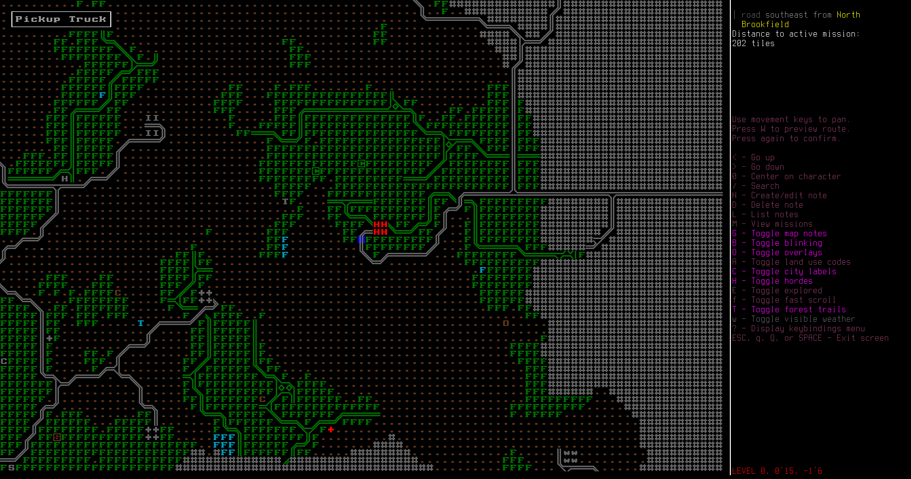
The helipad itself is a small military base, very accessible.

It's also got plenty of fuel, for when Erik converts some of his vehicles to be diesel/electric hybrids.

A zombie dog attacks Erik from within an abandoned cabin. It bites his leg deeply before he shoots it to pieces.

Not a problem; Erik uses some alcohol wipes to disinfect his wound and keeps going. He can't wait to gather more followers so he doesn't have to do this himself.
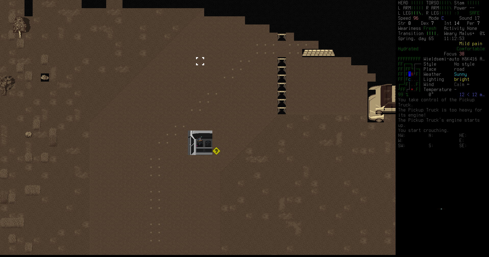The military roadblocks with automated turrets are goldmines for ammunition and magazines, but the problem is the turrets. Erik devises a method shooting the turrets before they can even see him. He crouches in his truck to avoid line of sight and drives right next to the turret...

...then he pops up to check where it is, ducks down again, pokes his rifle out the window...
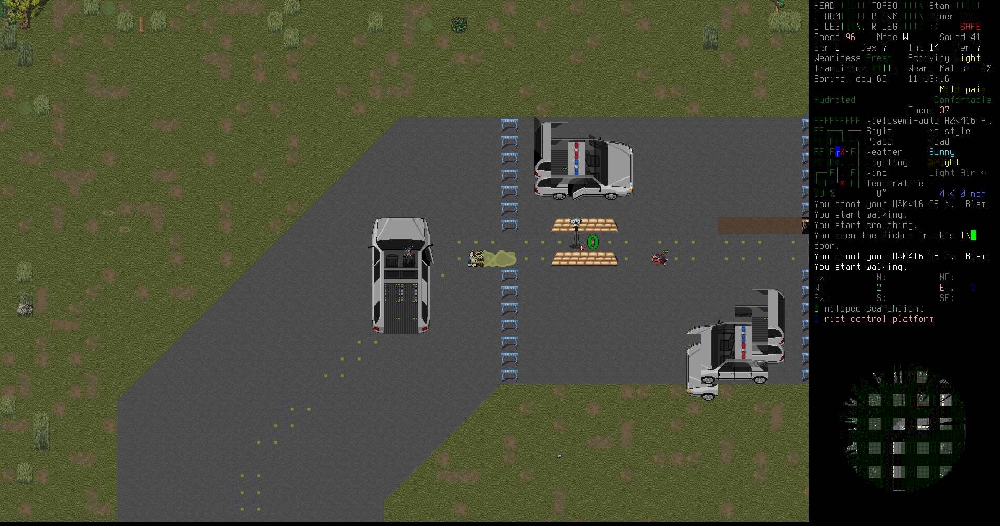...and BLAM, there's a dead turret. Rinse and repeat for the other turret, and for the other roadblocks in the area. Erik picks up 9mm pistol rounds as well as 5.56 NATO rifle rounds.


Erik scouts still more of the area. He spots another Last Man On Earth bunker to the north, and investigates.

This one had a hidden passage behind a bookcase. Erik slides the bookcase out of the way and finds a cache of guns and ammunition.
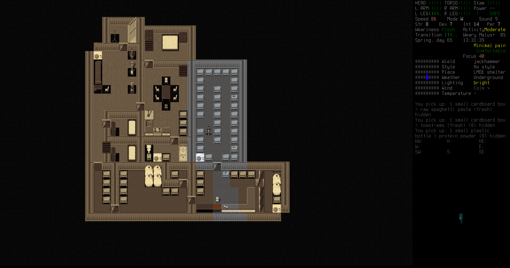The full bunker had a decent amount of supplies. Erik throws them all into his truck. Every little bit helps.

The military roadblock near the original evac shelter is the next nut to crack. Erik approaches with a full rifle as the zombie soldiers are distracted by the turrets.
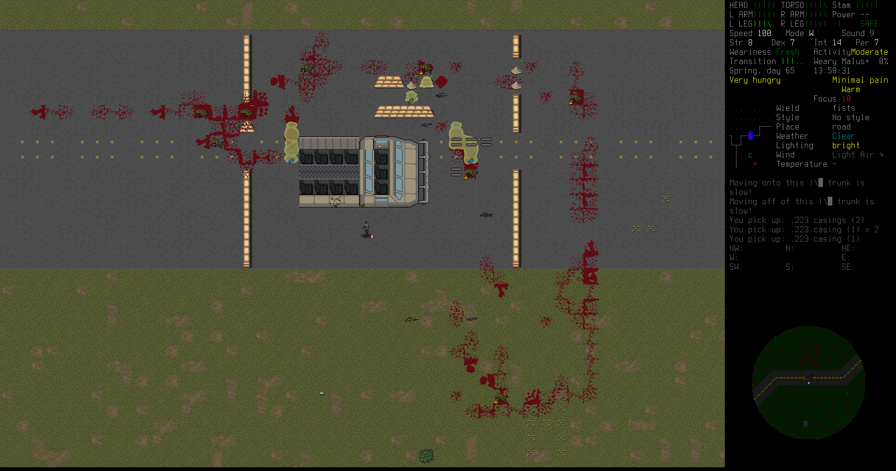One battle later, and everything but Erik is dead. He might not want to get his hands dirty, but there is no fury like the wrath of a lazy man.
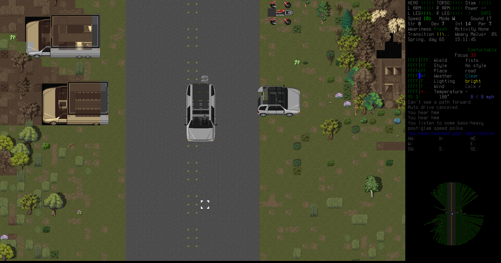He returns with a haul of guns and ammunition to base, ready to sort it out with Alejandro.
Return to base
The next step in the scouting phase is to break into some of the wind turbines to get an even broader view of the area. For this, Erik could either cut through the metal doors with an acetylene torch, which would be expensive, or he could craft some lockpicks and just spend a little time.
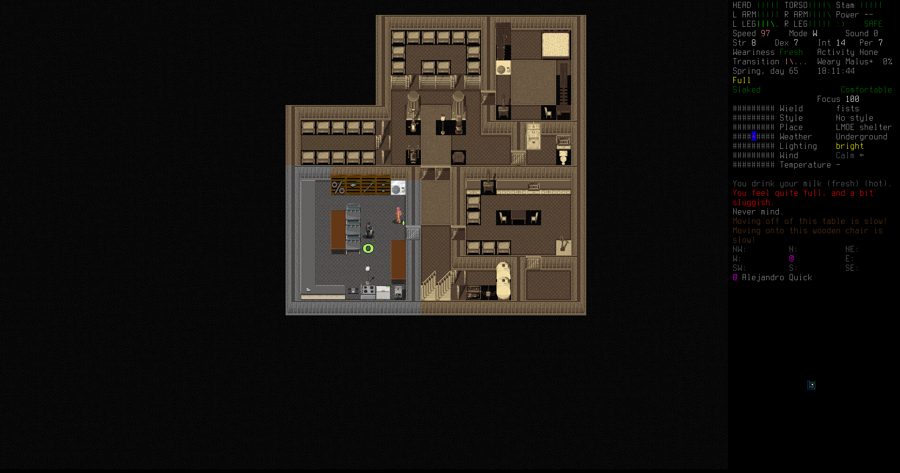Some sturdy workbenches looted from the helipad will make this easier.
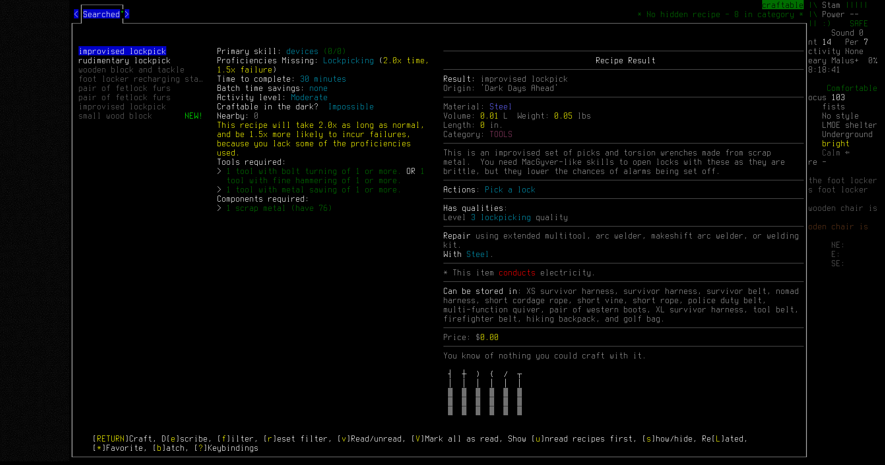Erik crafts a set of lockpicks with Alejandro's help. It's time for phase two of the scouting plan: wind turbine breaking and entering.